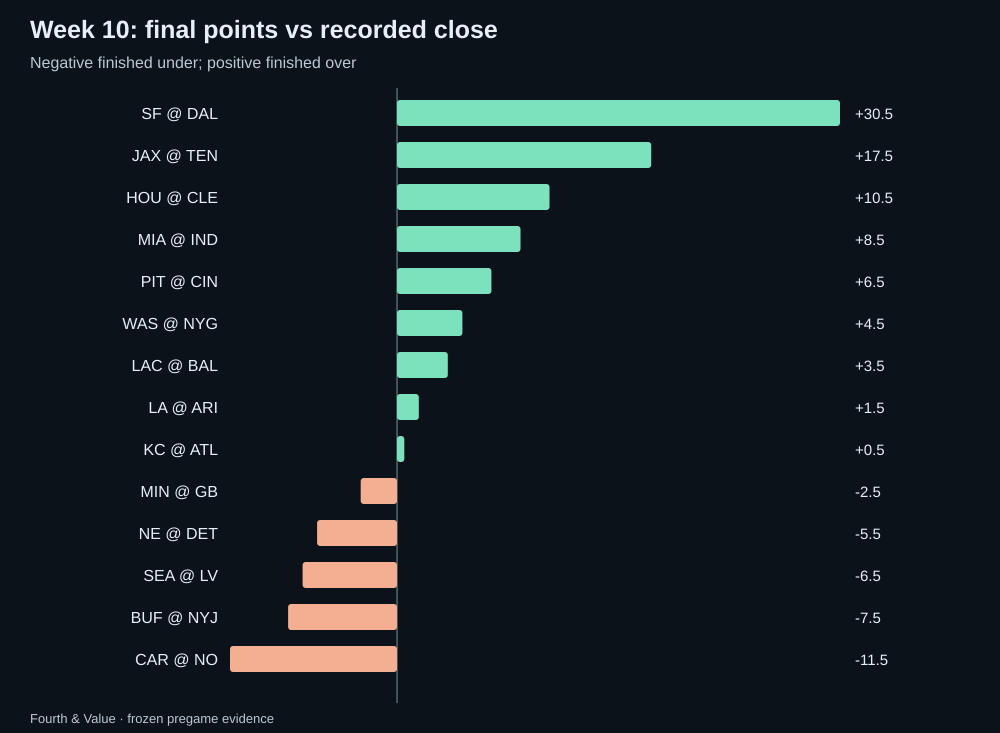
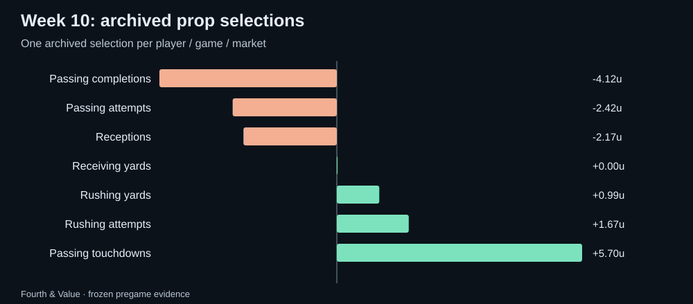
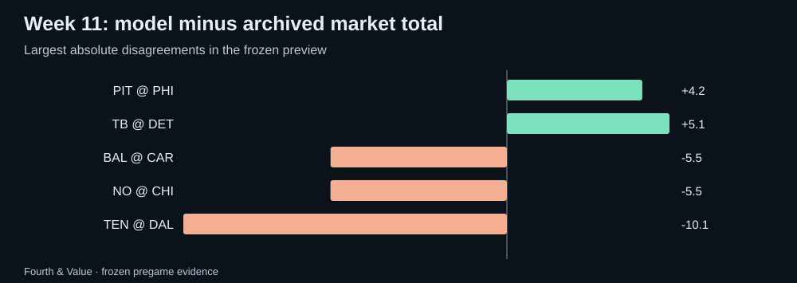

Fourth & Value · Weekly market review
NFL Week 10 review: the model receipts and the Week 11 watchlist
An audited Week 10 scorecard using frozen pregame data, plus Fourth & Value model-market disagreements to research for Week 11.
Week 10: the market scoreboard
Recorded closes produced 9 overs, 5 unders and 0 pushes. Against our archived market median, 9 games finished over, 5 under and 0 pushed.
The raw totals model direction went 9–5 with 0 pushes and +3.45u across 14 games with archived same-line prices; 0 unpriced directions are excluded from profit/loss. Mean absolute error was 7.93 points for the model versus 8.43 for the archived market median and 8.36 for the recorded close.

The model scorecard
The deduplicated published shortlist contained 125 selections; 118 were conservatively graded and 7 remain unresolved. The graded set went 55–63 with 0 pushes for -0.36u, or -0.3% on units risked. Missing participation or missing statistics remain unresolved rather than becoming automatic unders.
| Market | W–L | Net units | Unresolved |
|---|---|---|---|
| Passing touchdowns | 10–8 | +5.70u | 0 |
| Rushing attempts | 7–5 | +1.67u | 0 |
| Rushing yards | 10–8 | +0.99u | 1 |
| Receiving yards | 0–0 | +0.00u | 2 |
| Receptions | 23–31 | -2.17u | 4 |
| Passing attempts | 4–6 | -2.42u | 0 |
| Passing completions | 1–5 | -4.12u | 0 |

Closing-line value report card
Each published pick’s price compared with the closing market: the median no-vig chance across US books at the pick’s exact line, captured in the final minutes before the start. Value at the close is how much more the published price paid than that closing chance justified; beat the close is the share of picks where it was positive; market move is how far the closing chance moved toward our side (positive) or away from it (negative) after the pick. Over many picks, value at the close is the earliest reliable sign of a real edge, long before win–loss results settle down. It is a measure of price, not a guarantee.
| Edition | Picks | Closing prices | Value at the close | Beat the close | Market move |
|---|---|---|---|---|---|
| Morning picks | 2 | 2 | -0.7% | 50% | -0.9 pts |
| Afternoon picks | 0 | 0 | — | — | — |
| All picks this week | 2 | 2 | -0.7% | 50% | -0.9 pts |
| All picks since 2026-10-19 | 9 | 9 | +1.7% | 56% | +0.2 pts |
Probability quality, not just profit
Across 332 representative non-push outcomes with both probabilities available, the model Brier score was 0.2502 versus 0.2496 for the de-vigged consensus. The game-block 95% interval for model minus market Brier was -0.0042 to +0.0059.
A positive one-week return and a better probability score are different claims. This report keeps both because a profitable slate can still expose probability weaknesses, and vice versa.
Week 11: disagreement is a research question
The new weekly refresh is frozen before the first kickoff. The largest raw totals disagreements are:
- TEN @ DAL: model 44.9 vs archived median 55.0 (-10.1). This is a research gap, not a calibrated edge.
- NO @ CHI: model 43.5 vs archived median 49.0 (-5.5). This is a research gap, not a calibrated edge.
- BAL @ CAR: model 38.5 vs archived median 44.0 (-5.5). This is a research gap, not a calibrated edge.
- TB @ DET: model 49.1 vs archived median 44.0 (+5.1). This is a research gap, not a calibrated edge.
- PIT @ PHI: model 42.7 vs archived median 38.5 (+4.2). This is a research gap, not a calibrated edge.

Player props to recheck
- Brock Purdy Passing attempts under 32.5 at draftkings (-113); saved model mean 25.91, model probability 98.0%, estimated EV +84.7%. Calibration fitted; not prospectively validated
- Jalon Daniels Passing attempts over 27.5 at draftkings (-116); saved model mean 35.53, model probability 98.0%, estimated EV +82.5%. Calibration fitted; not prospectively validated
- Dak Prescott Passing attempts over 35.5 at betonlineag (-123); saved model mean 43.38, model probability 98.0%, estimated EV +77.7%. Calibration fitted; not prospectively validated
- Kyle Monangai Receptions over 1.5 at betonlineag (+178); saved model mean 1.60, model probability 54.1%, estimated EV +50.4%. Calibration fitted; not prospectively validated
- Brian Thomas Receptions over 1.5 at betonlineag (+171); saved model mean 1.82, model probability 54.2%, estimated EV +46.9%. Calibration fitted; not prospectively validated
These are saved prices from the weekly archive. Recheck the current line, price, injury status and role before treating any one of them as actionable. Model status labels are shown rather than hidden.
Audit notes
The scorecard uses hash-verified immutable weekly pregame archives.
The completed-week scorecard uses only the frozen pregame archive for Week 10 and official results/player statistics available after the games. The preview uses a separate frozen Week 11 archive. The workflow refuses to create a new archive after a game has started, refuses to overwrite an existing archive whose hashes do not match, and refuses to publish a review while any official Week 10 game remains unplayed.
Download the public review data · Current NFL board · How updates work · All recaps · Previous weekly review · Back to Fourth & Value